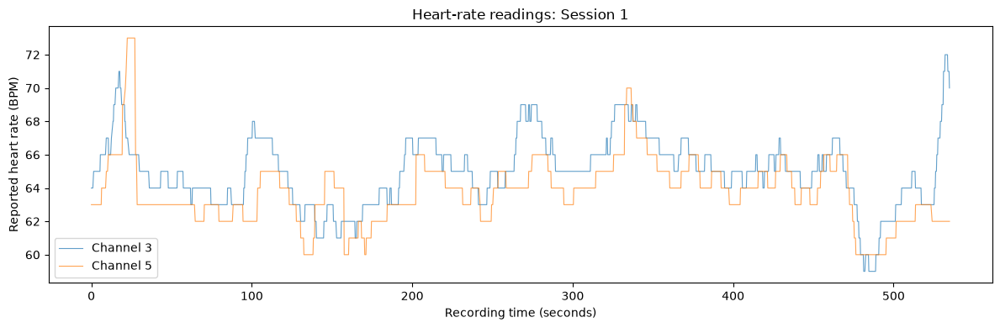
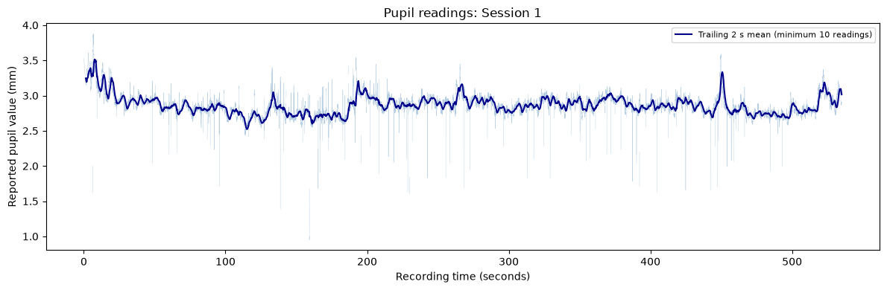
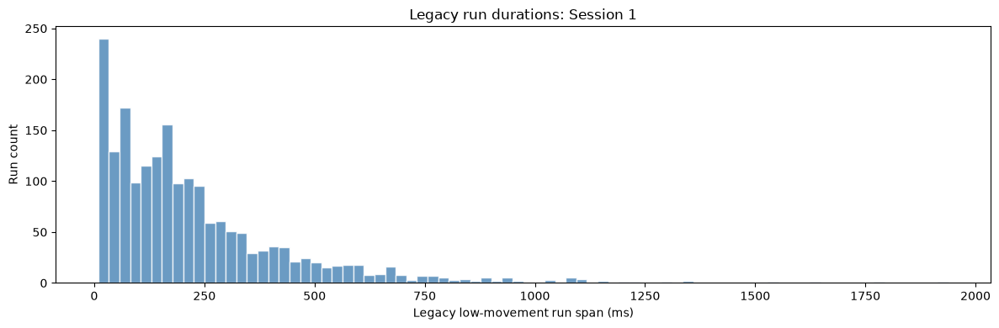
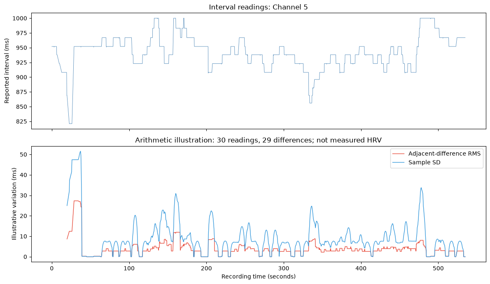
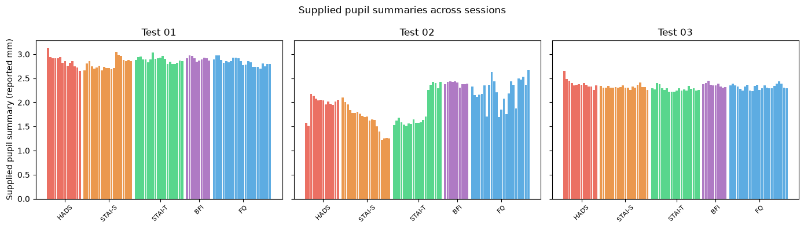
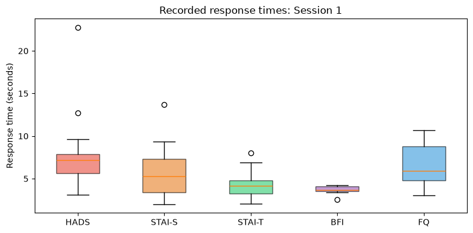

One participant · Descriptive analysis
Recordings and summaries
Raw sensor readings and questionnaire responses cover Session 1. Supplied eye summaries cover three sessions. These plots describe the records; they do not estimate anxiety or classification accuracy.
Analysis: Python, NumPy, pandas and Matplotlib.
Six views of the supplied data
Units and channel labels follow the source files. Device mappings, calibration and shared clocks are unverified.
Open a graph to view it at full size.
Heart-rate readings
01 · Session 1

Pupil readings
02 · Session 1

Historical low-movement runs
03 · Session 1

Interval readings and arithmetic variation
04 · Session 1, channel 5

Supplied pupil summaries
05 · Three sessions

Questionnaire response times
06 · Session 1

Data files
| File | Rows | Content |
|---|---|---|
hr.csv | 4,032 | Heart-rate readings |
ibi.csv | 2,394 | Sampled intervals |
sed.csv | 34,171 | Gaze, openness and pupil readings |
sed_fix.csv | 34,171 | Eye rows with historical flags |
eye_metrics.csv | 264 | 88 eye summaries × three sessions |
Psychometric_Test_Results.csv | 88 | Session 1 responses and timing |
Reading the plots
- One participant supports descriptive observations, with no validated classifier or population result.
- Recorded channels have no verified device mappings. Pupil calibration and gaze-coordinate units are undocumented.
- Sensor timestamps have unspecified time zones; questionnaire timestamps use UTC. Cross-stream alignment is unverified.
- Summary aggregation, baseline intervals and blink rules are unavailable. Raw recordings for Sessions 2–3 are absent.
- The candidate detector is tested for software boundaries on synthetic inputs. Fixation accuracy and device-specific thresholds remain unverified.